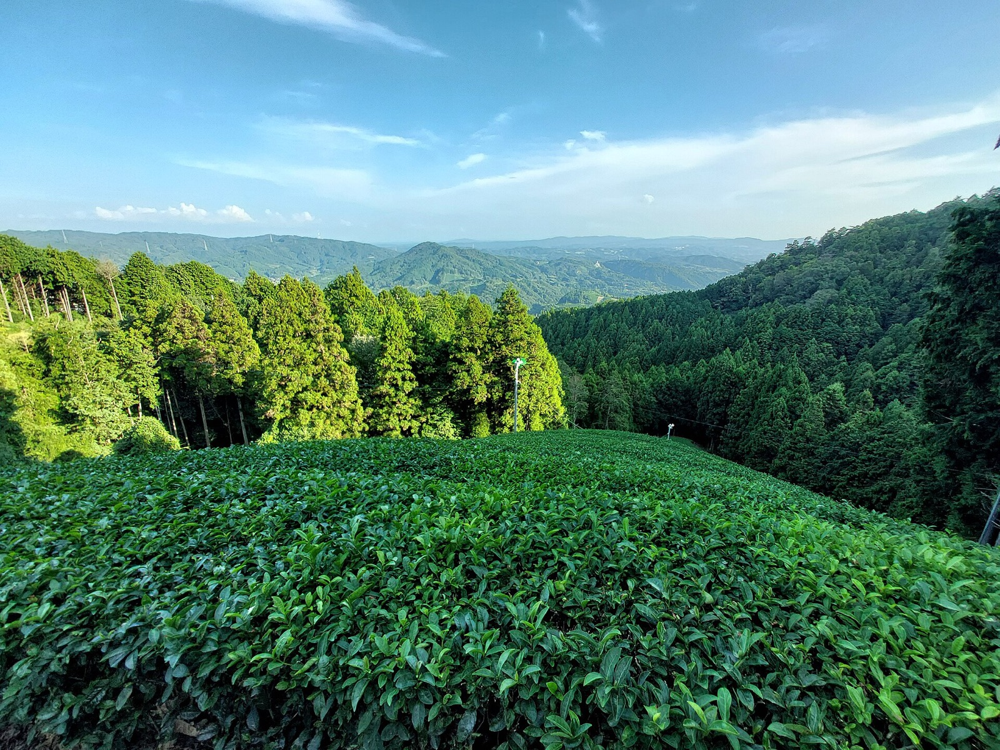

제조 과정
차광 재배부터 고운 가루까지, 말차가 만들어지는 과정
차광, 증열, 건조, 분쇄의 각 단계가 색과 맛을 결정합니다. 전통적인 제조 과정을 간단히 소개합니다.

이런 분들은 여기로
FJK Wellness를 선택하는 이유
다른 제품 없이 말차만 취급하기 때문에, 상담도 공급도 말차에만 집중합니다.
일본 농장 세 곳과 계약되어 있어 주문 물량을 안정적으로 공급할 수 있습니다.
스트레이트용 세레모니얼부터 라떼용 말차까지 한 거래처에서 구매할 수 있습니다.
일본의 전통적인 말차 제조 과정입니다. 수치는 일본 차 업계 자료를 기준으로 합니다. 풍경 사진이며 원료 농장이 아닙니다. 사진: ブルースパイダー / CC BY 4.0. 사진 출처
저널
말차를 주문하고, 만들고, 판매하는 분들을 위한 실무 가이드입니다.